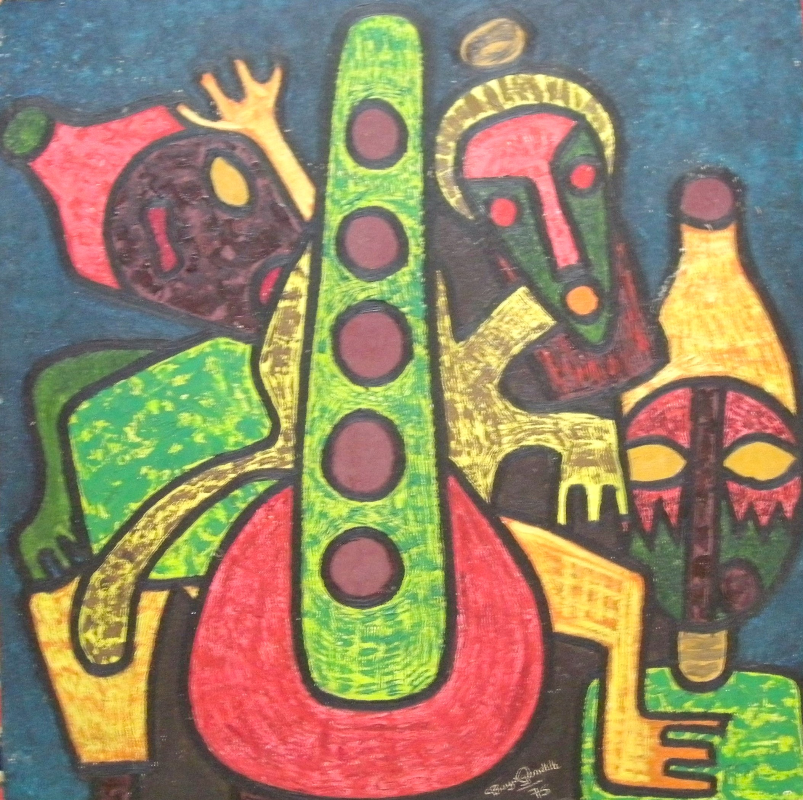

Bayo Ogundele
B. 1949
Artist Biography
Labayo Ogundele, like his artist elder brother Rufus, was born in Oshogbo, Nigeria. He too received training at the Oshogbo workshops under Denis Williams and Georgina Beier and his prints and paintings became typical of the Osobgo style – marrying Western training with traditional Yoruba art. Although majoring in acting, he also trained in printing and other art techniques from 1969-71at the Ori-Olukun Cultural Centre at the University of Ife under Prof S. Irein Wangboje. Bayo Ogundele had solo exhibitions at the University of Lagos in 1973, the British Council Ibadan in 1976, the Alliance Francaise Ibadan in 1983 and the French Cultural Centre, Lagos in 1984. He also had a solo show at the Goethe Institute in Yaounde in Cameroon in 1975. In addition to many group shows in Nigeria. Bayo Ogundele was one of the artists in an exhibition on Osogbo art at the Museum of African Art in Belgrade in 1988, and his work was also shown in other group exhibitions in the UK, USA, Australia and Germany. The Jordan Gallery of National Arts holds his work.

Untitled, 1975